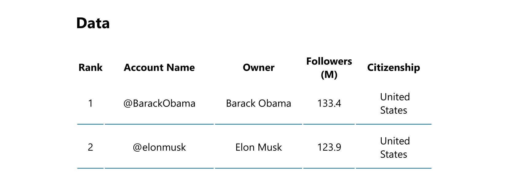
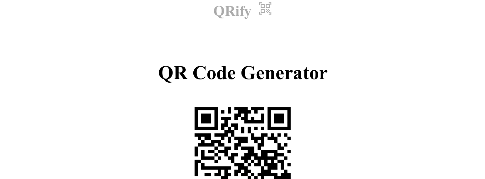
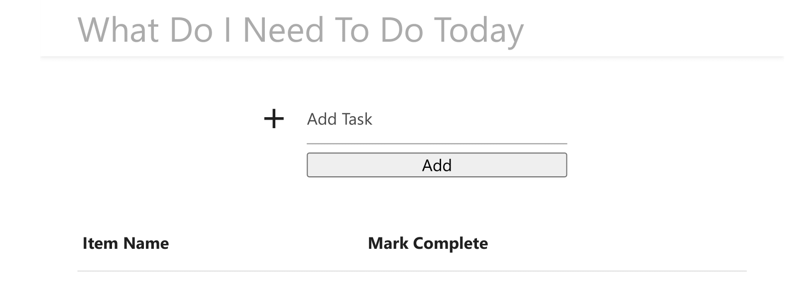

Get Your Space in the Digital World
What's even in your stack?
Frontend
The front end is everything you can see on the webpage. On this site, this includes the structure, using semantic HTML; for the styling and animations, CSS (like the fade-in on these tabs) and for these tabs to work, I use Javascript
My front end list:
- HTML 5
- CSS 3
- Javascript (inc. ES6)
- React JS
When creating Python applications, I make use of the Jinja templating engine to create dynamic web pages
Backend
If the frontend is everything you can see on the webpage, the backend is everything you can't see; the underside of the iceberg. My main backend language is Python, which extends to Flask to create dynamic web pages and applications
My backend list:
- Python 3
- Node.js (when working with React)
- Working with Relational Databases (MySQL)
- NoSQL databases (MongoDB)
Most of my experience is working with the frontend but I am working a lot on developing my backend profile
Data
Working with data is becoming more important every year and I have a great interest in the impact of large-scale data applications and big data in how it can give us better knowledge of complex topics
My data list:
- Pandas
- Displaying data - i.e. matplotlib
- Web Scraping with BS4
- Python functions to manipulate raw data and diplay in web browsers
My favourite use of data analysis is to extract raw data and display in a readable format to gain insights. To watch this in action, see my Twitter 50 project below
Other
These skills are just other valuable things that I have picked up that I feel improve my workflow and add to my overall profile as a software developer.
The rest:
- Git and version control
- GitHub work flow
- Google cloud management
- UI / UX design and creating stories for websites
When creating Python applications, I make use of the Jinja templating engine to create dynamic web pages

Twitter 50
Project Goal
To create a Python project that takes data from a CSV file and display dynamically in a Flask application, using the Jinja engine
Tech
- Python
- Flask
- Pandas
Link

QRify
Project Goal
To create a QRcode generator with a simple user interface where the user can choose custom colours
Tech
- Python
- Flask
- qrcode module
Link

Todo App
Project Goal
To create a todo list app, which stores tasks in an SQL database, with an appealing UI using MaterializeCSS
Tech
- Python
- SQLAlchemy
- MaterializeCSS
Link